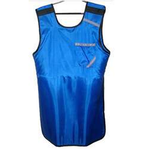

Cassette System
- Foam Pads

- These are foam cut to various shapes and sizes for various uses especially for the support and immobilization of the patient or for support of part of the body or cassette.Foam pads can be triangular, square, rectangular, round etc.They may be thickness of 4 to 8 inches
- Sand bags
- They are small bags of various sizes and shapes filled with sand.They are placed in areas outside the x-ray areas of interest for the support of patient during x-ray procedure.It should not be in the way of the beam or near area of interest.The sand is opaque and will obscure area of interest if included in the radiograph
- Cassettes
- The cassettes are in sizes
- 35 x 43cm(14 x 17ins)
- 35 x 35cm(14 x 14ins)
- 30 x 40cm(12 x 15 ins)
- 24 x 30cm(10 x 12 ins)
- 15 x 40cm(6 x 15 ins)
- 18 x 24cm(8 x 10 ins)
- Anatomic Marker

- They are metal or opaque materials that bear R(right) and L(left) letters that can be be reproduced on x-ray.They are used to identify the sides of the patient's body of L for left side and R for right side
- Immobilizing Bands
- These are long bands of tough and soft belts to strap the patient to immobilize him.Immobilization bands may be attached to the couch
- Lead Aprons
- 
- Worn by radiologist or patient guidance for radiation protection purposes
- Vertical Bucky

- For taking x-ray projections in the erect position